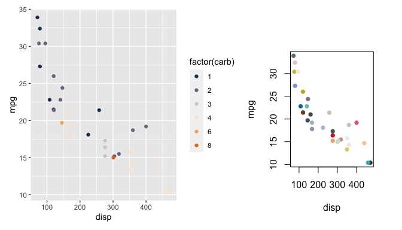

unibeCols contains the corporate design colours of the University of Bern, as defined in the “Gestaltungselemente” manual.
unibeCols can be installed from github via
remotes::install_github("CTU-Bern/unibeCols")or from CTU Bern’s universe via
install.packages("unibeCols", repos = "https://ctu-bern.r-universe.dev")This is a basic example which shows you how to solve a common problem:
library(unibeCols)All colours can be viewed via
There are then a set of functions for the darkest colours (e.g. unibeRed, unibeGreen) and a set of functions for the scale as defined by the names in the plot above (e.g. unibeRedS, unibeGreenS).
The colours can be used in ggplot2 or base graphics…
library(patchwork)
library(ggplot2)
# par(mai = c(.5, .5, .5. .5))
p1 <- ggplot(mtcars, aes(x = disp, y = mpg, col = factor(carb))) +
geom_point() +
scale_color_manual(values = c(unibeOceanS()[c(1,3,5)], unibeApricotS()[c(5,3,1)]))
p1 + ~plot(mpg ~ disp, mtcars,
bg = sample(unibePalettes(FALSE)$cols, nrow(mtcars)),
col = NA, pch = 21)
… and can also be used to colour text (syntax and result depends on the output format, the following should work for HTML, but not github):
This should be red